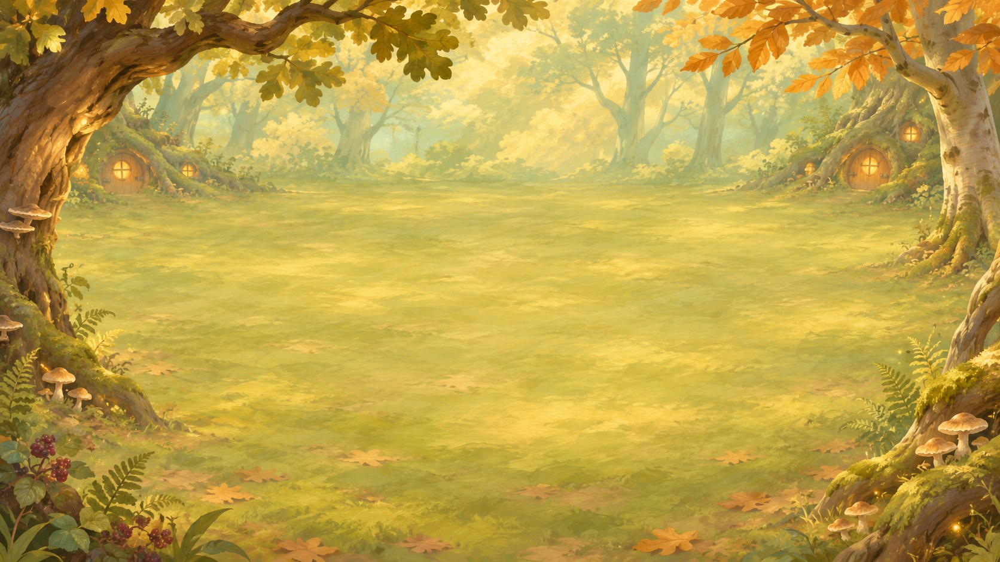
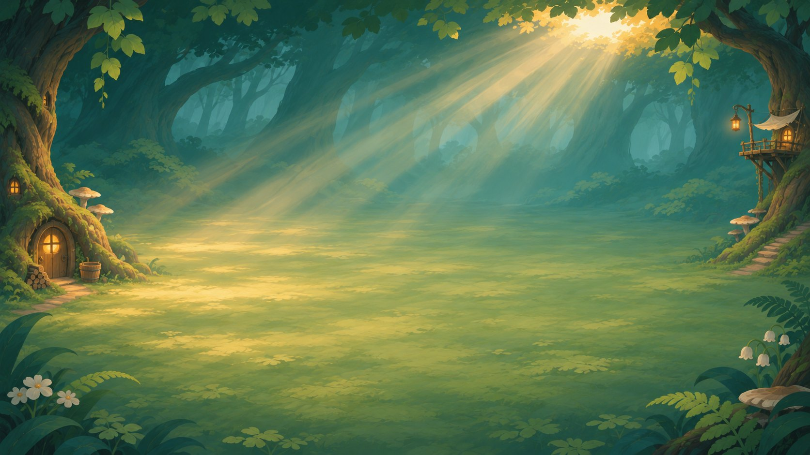
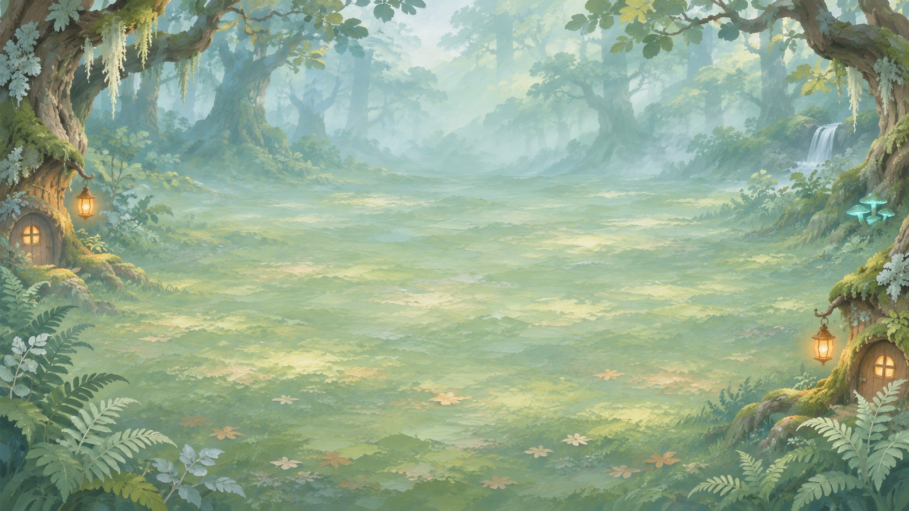
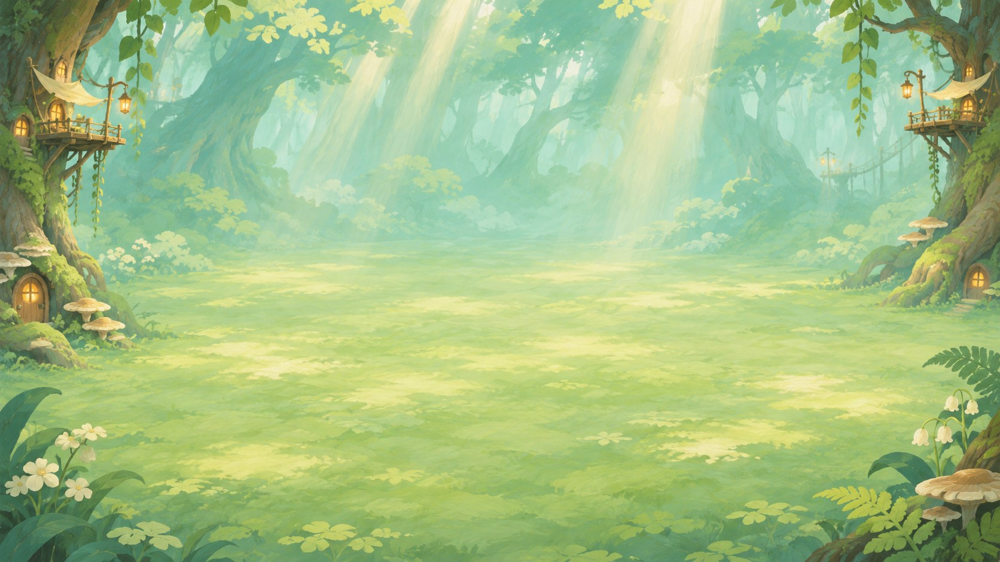
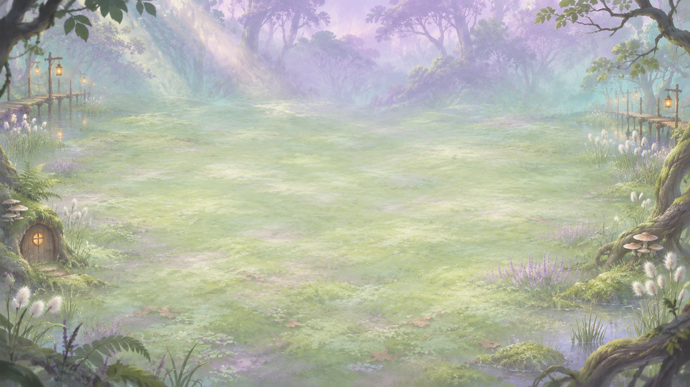

The board on a journey
Three lab looks redone around one idea: painted art surrounds the board, and the place changes as the game goes on. Your board never moves, and it is centred: horizontally in the stacked look (Clean Arena), top to bottom in the left-right looks (Storybook, Nouveau). It sits in the same place, at the same size, in the recruit, the fight and on travel; everything else changes around it. Every unit is a rounded hex between the mid hex and the tall hex, so the back row tucks into the front row. The leaderboard sits on the right in every look. Every two turns the band moves to a new area. Rules are ignored on purpose, with one exception: every board is 4 slots in front and 3 behind, the back row offset half a slot (rulebook 8.1). Empty slots stay where they are. These are looks to react to, not proposals for the game.
Handing this on? HANDOFF.md lists the owner's layout rules and where each piece lives.





Clean Arena, art first
- The layout to build on (owner, 11 Nov). Your board is centred at the bottom; above it, centred, the market in the recruit or the opponent's board in the fight. Your board doesn't move a pixel between them.
- Every unit is the same size everywhere (176 × 226): market, hand, your board and the opponent's. A unit stays the same object as it moves from the market to the hand to the board.
- The scoreboard is centred top to bottom on the right.
- Chosen: layout B (owner, 11 Nov), now the default: the scoreboard is a slim strip of portraits on the right edge, and your hero and End turn sit beside your board. Four small layout variants — compare all four side by side (or dock: Layout A–D, or the links): A baseline: scoreboard rows on the right, End turn bottom-right, your hero top-left, the hand beside your board · B a slim strip of portraits for the scoreboard; your hero and End turn beside your board on the right · C End turn is a tall bar on your board's right edge; the right column holds only the scoreboard · D quiet sides: the portrait strip plus the End turn bar.
- Units are hex pictures; click flips one for its rules and Buy / Sell / Play, hover shows a reader.
Storybook Ink, the open book
- You are always the left page; your band is centred top to bottom and never moves. The right page is the market, or the opponent in a fight. On travel the page turns under your band.
- Units are inked hexes with points left and right, so the two columns pack together. The name sits on a paper tag; Attack and Health on the bottom corners; the rules are in the hover note.
- Right page: a market stall with a striped awning, and a wooden counter holding the gold and Tier up / Refresh / Freeze. Fellow travellers (the leaderboard) stand to the right of the book.
Woodland Nouveau, the altar
- Left-right, your altar centred top to bottom, just left of the screen's centre line. Right of the line: the ivory market cabinet in the recruit, the opponent's garnet altar in the fight.
- Units are gilt hexes, points left and right, packed in two columns; jewels carry the numbers along the bottom edge.
- Your hero and the hand on the left; the leaderboard medals on the right edge; the End turn door under the cabinet.
Slot shapes
- The chosen shape leads (between the mid hex and the tall hex, now in all three looks), then your picks: honeycomb, mid hex, tall hex. The others stay for comparison: card, cut corners, near-diamond, shield wall and woven. Both layouts, the same zone sizes as the looks.
- Pictures are placed by hand, never stretched: scaled to cover the shape, zoomed a touch on hexes, and panned so the face sits in the hex's wide middle band. Units wider than tall (the honeycomb on its side) keep the top of the picture, so heads and hats stay whole.
- Shapes that point into the next row let the back row tuck in, so the board gets shallower. Bottom-up, at today's unit width: honeycomb 76% of the height, mid hex 83%, tall hex 91%.
- Each shape shows its unit size in the same zone, how much of the picture survives, what works, what to watch, and variations.
Art: units are the ink-and-glow repaint from
ideation/ui-art-inkglow; the five areas are the loop-1 painted backdrops and the runtime Highcrown Canopy. Unit names and text come from ideation/main content.